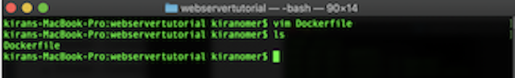
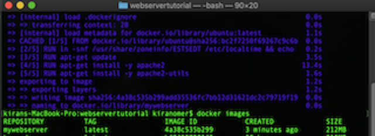
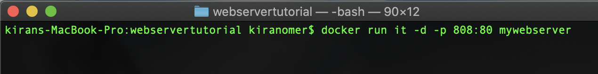
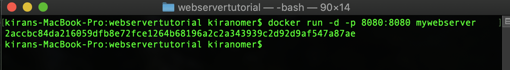

1- Create a local directory/folder using the following command in terminal
$ mkdir webservertutorial
This will create an empty folder in your current location

This will create an empty folder in your current location
2- Get into the folder with this command
$cd webservertutorial
3- Create a dockerfile,a file that has set of instruction that will be executed when we run the server. Use the following command if you have vim installed
$vim Dockerfile

4- Type the following
FROM ubuntu
ENV TZ=EST5EDT
RUN ln -snf /usr/share/zoneinfo/$TZ /
etc/localtime && echo $TZ > /etc/timezone
RUN apt-get update
RUN apt-get install -y apache2
Run apt-get install -y apache2-utils
EXPOSE 80
ENTRYPOINT ["apache2ctl"]
CMD [“-D", "FOREGROUND"]
- Create our image to be from the Ubuntu base image.
- ENV TZ will pickup local time zone needed to run apache2
- RUN command to update all the packages on the Ubuntu system
- RUN command to install apache2 on our image.
- RUN command to install the necessary utility apache2 packages on our image.
- RUN command to clean any unnecessary files from the system.
- EXPOSE command is used to expose port 80 of Apache in the container to the Docker host.
- CMD command is used to run apache2 in the background
:wq To write and quite (save and exit)
5- Run the following to see if the file is saved
$ls

6- Run the following command to build the container
$ docker build -t="mywebserver" .

7- Run this to see if the new image is created
$ docker images

8- Once the image is build, we can run the following command to create a container and expose port 80 for our web server
$ docker run -i -p 808:80 -td mywebserve
- -p: Publish port 808
- -d: let the container run in the detached mode/ in the background
- -i: Interactive
- -t: tty
- -d: Detach

9-Check the container list with
$ docker ps
10-Check the following in your web browser
http://localhost:808